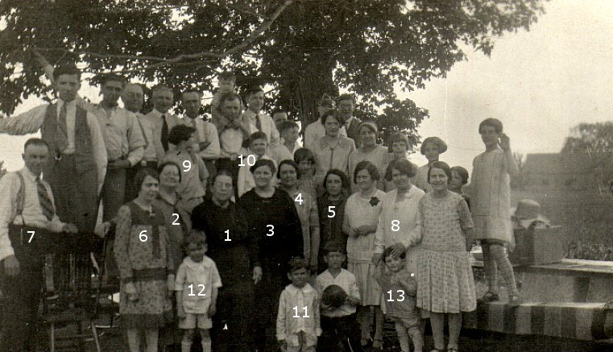

Photo taken around 1928
Part of Rosianne Miron-Charette's family
It shows Rosianne Miron, widow of Alphonse Charette Sr., surrounded by her five daughters, their husbands and children, and Rosario (her grandson) and his family, that is, her great-grandchildren.
No. 1 Rosianne Miron (1856-1935)
No. 2 Rose-Anna Charette, Rosianne's daughter (1878-1939)
No. 3 Alexina Charette, Rosianne's daughter (1882-1955)
No. 4 Mary Charette, Rosianne's daughter
No. 5 Lumina Charette, Rosianne's daughter (1892-1964)
No. 6 Irène Charette, Rosianne's daughter (1897-1949)
No. 7 Rosario Charette, Rosianne's grandson (1897-1940)
No. 8 Marie-Anna Caron, Rosario's wife (1897-1966)
No. 9 Thérèse Charette, Rosario's daughter and Rosianne's great-granddaughter (1918-1994)
No. 10 Benoît Charette, Rosario's son and Rosianne's great-grandson (1920-1957)
No. 11 Gérard Charette, Rosario's son and Rosianne's great-grandson (1921-1996)
No. 12 Rosaire Charette, Rosario's son and Rosianne's great-grandson (1923- )
No. 13 Jean-Noël Charette (?), Rosario's son and Rosianne's great-grandson (1926- )
At the top, to Rosario's right, are probably the husbands of Rosianne's daughters, and the other, unidentified children are their children, including the Lavoies (children of Rose-Anna Charette and Aldéric Lavoie).
Note that Rosario was born the same year as his aunt Irène. He was the eldest son of Rosianne Miron's eldest son.
Rosianne Miron's sons and their families are missing. Her eldest son Alphonse had died more than 10 years before, but she still had 4 living sons: Arthur, Aldéric, Ernest and Oscar. They do not seem to have attended this summer gathering which, according to the note on the back of the photo, took place at Mary's in St-Alexford (?) or in St-Polic (?).